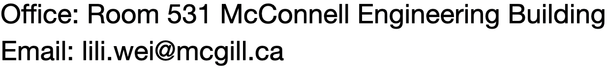
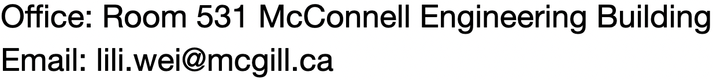

Lili Wei (魏莉力)
Post-Doctoral Fellow at HKUST Department of Computer Science and Engineering The Hong Kong University of Science and Technology

Post-Doctoral Fellow at HKUST Department of Computer Science and Engineering The Hong Kong University of Science and Technology
I will join the Department of Electrical and Engineering at McGill University as an Assistant Professor in spring 2022. You can find my personal profile at the homepage. I’m actively looking for self-motivated PhD students who are interested in software engineering research, especially in program analysis, test generation, and mobile computing. I value student supervision as an important mission of myself and will work closely with you if you become my student. Please send me your CV and a copy of your transcript to me via email if you are interested.
I put down my five pieces of advice for prospective PhD students below. They somehow reflect my philosophy of PhD studies and research. Please read them before contacting me. We will work more smoothly if our philosophy matches.
Research is the No. 1 important thing for a PhD student. We spend most of our time doing research: exploring the uncertainties and trying to answer unanswered questions. As a result, being passionate about research is one of the most important qualities of a PhD student. If one doesn't enjoy research, he or she will be likely to have a hard time during the PhD. If you don’t have any research experience and don’t know whether you like research, you may check whether you often want to ask why when you encounter something you don’t understand or whether you feel excited when you learn something new. (This applied to myself, I knew nothing about research before I received my PhD offer. :))
Also, be serious about research. Research is systematic and rigorous investigation into something unknown. Care about the research problems before caring about the publications out of them.
2. Be prepared for difficulties.During the PhD studies, we can face a variety of difficulties. For example, it is common that we have devoted hours and hours each day to look for a solution but everything we tried did not work out. It is also common that we submitted our findings and results to some conferences or journals with hope, but we only received rejection letters. We may get depressed at these moments. Be prepared for such difficulties so that we will not feel so depressed when we really face them. We need to work hard but we also need to understand and accept that hardworking may not resolve every problem we face in our PhD study.
3. Dig deep into one research direction but be open to other directions at the same time.It is very important for a PhD student to dig deep into one research direction during his or her PhD study. By digging deep into a direction, we can gain a better understanding on the problem and conduct more impactful research. However, it is also important to be open to other research directions. Some PhD students only care about their own research topics. For example, in group meetings, such students only pay attention to papers and projects related to their own topics but ignored the others. This is a bad practice. Getting to know other research topics can also inspire us when we face some problems.
4. Be self-disciplined and well-organized.Essentially, the PhD study is a journey of our own. After finishing the courses, we can mostly decide our own schedule. We should be self-discplined and well-organized to make use of our time. I believe PhD studies are to train the students’ ability to find problems, abstract problems, solve problems and properly present the solved problems to the audience. We can learn the best only from our own experiences.
5. Research is important. Life is also important.Enjoy research and enjoy our personal life. It is important for us to have a joyful PhD journey.
| The page template is designed by W3layouts.